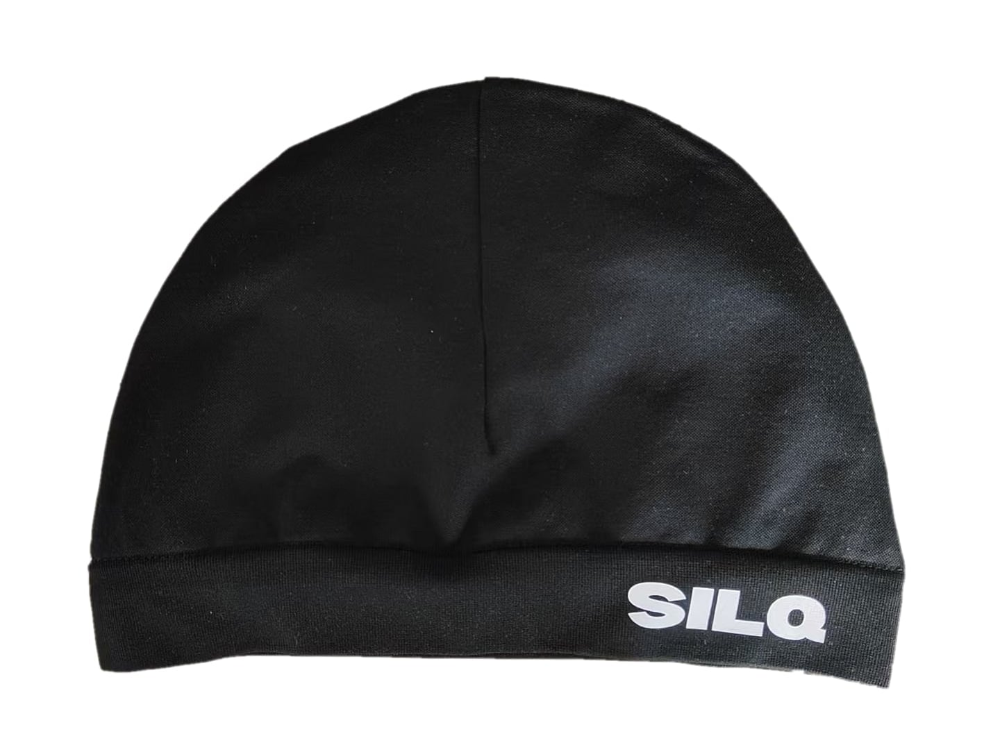
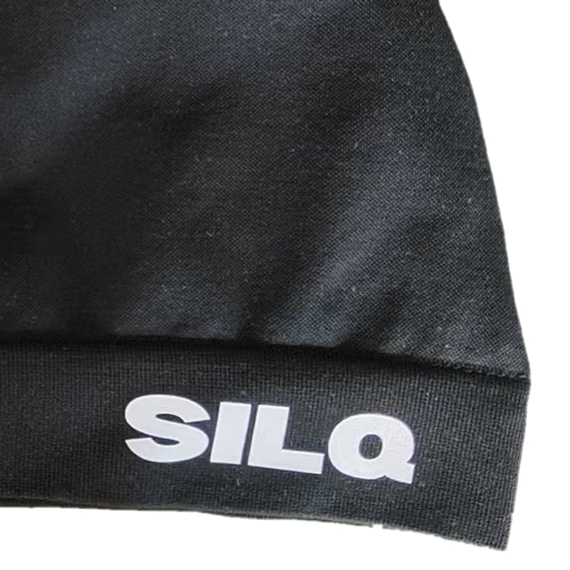

Nyinkommen · säljer snabbt
Satinfodrad skullcap
Snygg utanpå.
Satin inuti.
SILQ är skullcapen du bär för looken, en ren silhuett som gör outfiten. Samtidigt jobbar satinfodret mot håret: mindre friktion, mindre frizz och fukten kvar. Stil och hårvård i samma plagg.

Varför SILQ
Looken
Tight passform, ren svart yta, diskret logga. Skullcapen passar till hoodie, puffer eller kostym. Den är ett eget plagg i outfiten.
Håret mår bättre
Insidan är satin, inte bomull. Håret glider i stället för att skava, och fukten stannar i håret i stället för i tyget. Resultatet blir mindre frizz och färre brutna strån.
Dag som natt
Bär den ute på dagen och sov i den på natten. Waves, flätor och lockar håller formen längre, och du behöver styla om mer sällan.
Trenden
Från sovrummet till gatan
Skullcapen var länge något man bara sov i. Nu syns den på scen, i musikvideor och på gatan. Artisten Central Cee och contentcreatorn Marlon har gjort den till en självklar del av streetwear-looken.
SILQ har inget samarbete med Central Cee eller Marlon. De bär inte SILQ, men de visar vad en skullcap kan vara.

En skullcap, gjord ordentligt
Vi gör en enda produkt och lägger all omsorg där. Stretchig utsida som sitter tight utan att klämma, satinfoder som skyddar håret och sömmar som tål tvätt.
199 kr — frakt tillkommer. Skickas med PostNord, 2–5 arbetsdagar.
SILQ är ett UF-företag
Vi är elever som driver företag på riktigt under läsåret, genom Ung Företagsamhet. Du handlar direkt av oss, inte av en mellanhand, och varje beställning packas för hand.